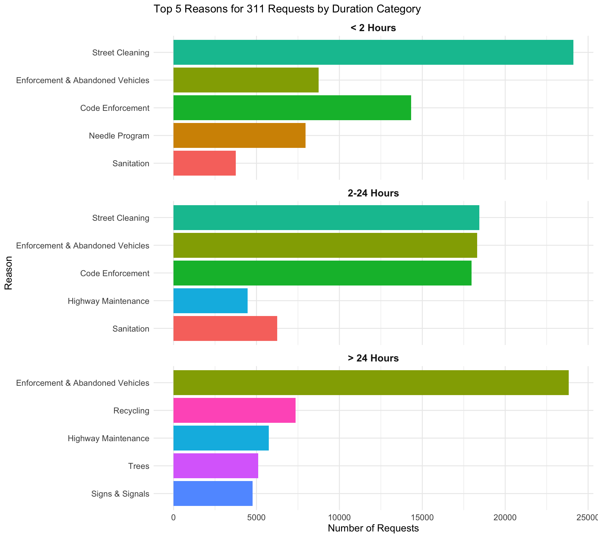
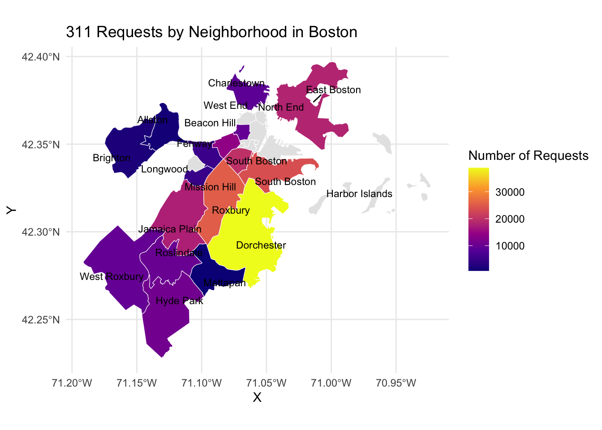
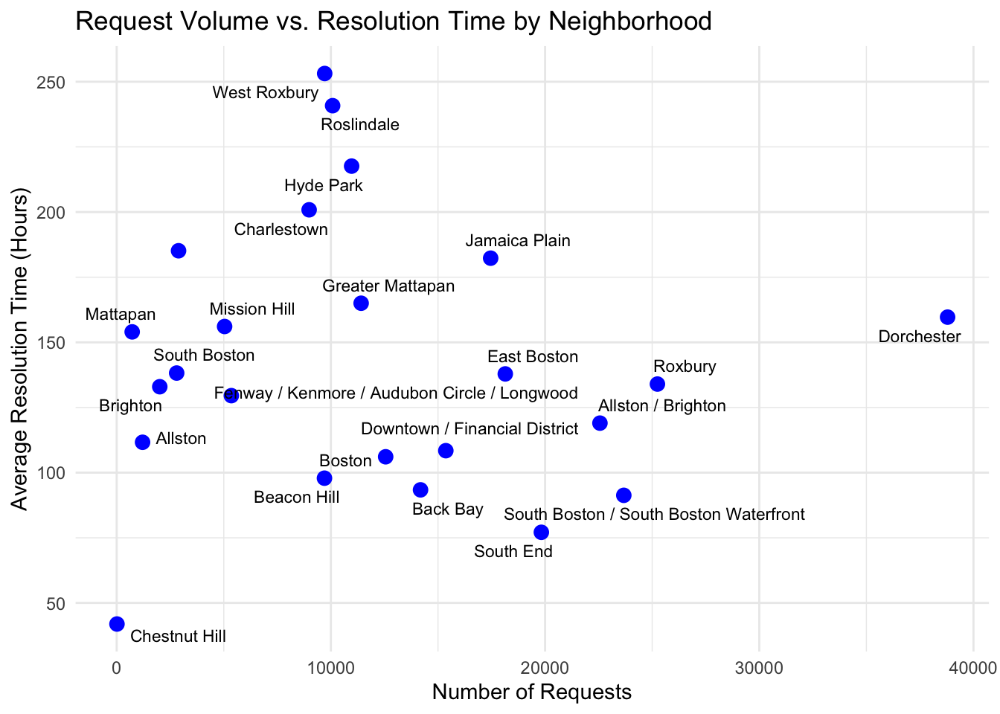

Loading required package: timechange
Attaching package: 'lubridate'
The following objects are masked from 'package:base':
date, intersect, setdiff, union
# Cleaning# From our missing value analysis, since submitted_photo and closedphoto column do not contain many non-null values, let’s drop themdf <- df |>select(-submitted_photo, -closed_photo)
3.1 Number of requests by season, months, days of the week, and hours of the day (line, heatmap)
We begin our analysis by investigating any seasonal trends in the number of 311 requests made.
Since this dataset was pulled in November, we will assume the data for that month is incomplete. Nonetheless, the data shows a steady increase in the number of requests throughout 2024, peaking in August before declining. Perhaps this trend can be attributed to the warm weather. Warmer months, especially in summer, often bring increased outdoor activities such as public events, festivals, and tourism. These activities lead to a rise in noise complaints, trash collection requests, and reports of public infrastructure issues, explaining the upward trend in 311 requests as the weather gets warmer.
While exploring seasonal trends provide us with insights into how external factors like weather and activities influence the volume of requests, we can also analyze patterns by day of the week and hour of the day to get a closer look at when residents are most likely to engage with the 311 system. These finer temporal trends can help us understand the daily rhythms of service requests and how they align with the city’s operational dynamics.
Code
df$day_of_week <-wday(df$open_dt, label =TRUE, week_start =1) # Monday = 1df$hour <-hour(df$open_dt)df$day_of_week <-factor(df$day_of_week, levels =c("Sun", "Mon", "Tue", "Wed", "Thu", "Fri", "Sat"))df$day_of_week <-fct_rev(df$day_of_week)# Then proceed with your plotting codeheat_data <- df %>%count(day_of_week, hour)ggplot(heat_data, aes(x = hour, y = day_of_week, fill = n)) +geom_tile() +scale_fill_viridis_c() +labs(title ="Requests by Day of Week and Hour of Day",x ="Hour of Day", y ="Day of Week", fill ="Count") +theme_minimal()
The requests appear to be more concentrated during early mornings of weekdays, suggesting that most issues reported are likely related to workweek activities, such as commuting, public services, or business-related issues. The lower activity on weekends might reflect reduced reporting due to fewer operational hours of city departments or residents being less engaged with city services during days off. The gradual decline in requests after the morning hours suggests that residents are less likely to report issues as the day progresses, possibly due to being occupied with work or other activities.
Understanding when residents engage with the 311 system provides valuable insight into the timing of service needs. However, to gain a deeper understanding of the issues themselves, we can analyze the reasons behind these requests.
3.2 Exploration of request reasons (bar)
Code
df |>group_by(reason) |>summarize(n =n()) |>mutate(reason =fct_reorder(reason, n)) |>ggplot(aes(x = reason, y = n)) +geom_col(fill ="blue") +coord_flip() +labs(title ="Reasons for 311 Service Requests",x ="Reason",y ="Count of Requests" ) +theme_minimal()+theme(axis.text.y =element_text(size =8) )
To gain a high-level overview, we plotted the counts for all 45 distinct reasons for requests in our dataset. The most common reason is “Enforcement & Abandoned Vehicles,” accounting for over 60,000 requests (22.5% of the total), followed by “Street Cleaning” and “Code Enforcement.”
This naturally leads to the question: what do these reasons actually represent? Specifically, can we uncover more details about what these requests entail? By consulting the attached data dictionary, we learn that the “reason” and “type” columns are part of a hierarchical case classification system, where “reason” represents a broader category, and “type” provides a more detailed breakdown (REASON > TYPE).
This allows us to create the following alluvial diagram, showing how a “reason” flows to different “types”.
Code
top_5_reasons <- df %>%count(reason, sort =TRUE) %>%slice_max(n =5, order_by = n) %>%pull(reason)# Filter the dataset to only include these top 5 reasonsdf_top5 <- df %>%filter(reason %in% top_5_reasons)top_10_types <- df_top5 %>%count(type, sort =TRUE) %>%slice_max(n =10, order_by = n) %>%pull(type)df_aggregated <- df_top5 %>%mutate(type =ifelse(type %in% top_10_types, type, "Other"))reason_type_counts <- df_aggregated %>%count(reason, type)# Then plot as beforeggplot(reason_type_counts,aes(axis1 = reason, axis2 = type, y = n)) +geom_alluvium(aes(fill = reason), width =1/12, alpha =0.8) +geom_stratum(width =1/12, fill ="grey80", color ="grey50") +geom_text(stat ="stratum", aes(label =after_stat(stratum)), size =3, hjust =0) +scale_x_discrete(limits =c("Reason", "Type"), expand =c(.1, .1)) +theme_minimal() +theme(legend.position ="none",panel.grid =element_blank(),axis.title =element_blank()) +coord_cartesian(clip ="off") +theme(plot.margin =unit(c(0, 4.85, 0, 0), "cm"))+labs(title ="Alluvial Diagram of Top 5 Reasons with Aggregated Types",fill ="Reason" )
Note that since the “type” column contains too many categories and makes the alluvial chart unreadable, we aggregated less frequent categories into an “Other” category. Specifically, this alluvial diagram only shows the top 10 most frequent types, drawn from the subsetted dataframe of top 5 reasons.
The main thing to notice is that the vast majority of “Enforcement & Abandoned Vehicles” requests are for Parking Enforcement (57,299 requests), making this the most common source for 311 requests in our dataset. Boston, similar to New York City, is a dense urban environment, where limited parking availability and strict enforcement policies often lead to conflicts and violations.
“Code Enforcement” is another significant category, with the most frequent type being “Improper Storage of Trash (Barrels)” (18,782 requests), followed by “Poor Conditions of Property” (8,116 requests). The high volume of trash-related requests may stem from challenges in managing waste in densely populated areas or neighborhoods with limited access to proper waste disposal resources. We will investigate geographic trends soon.
“Street Cleaning” requests are predominantly related to “Requests for Street Cleaning” (20,681 requests), with “CE Collection” (16,506 requests) also being a major contributor. Smaller, specialized issues like “Pick up Dead Animal” (7,854 requests) are also noteworthy.
“Highway Maintenance” primarily involves “Request for Pothole Repair” (10,158 requests), indicating the persistent issue of potholes in the city’s infrastructure. The “Other” type here accounts for 11,083 requests, suggesting a wide range of miscellaneous highway-related issues.
“Sanitation” requests are dominated by “Schedule a Bulk Item Pickup” (11,162 requests) and its closely related subtype “Schedule a Bulk Item Pickup SS” (6,918 requests). These reflect residents’ need for efficient disposal of larger waste items.
Now that we have an idea of both the temporal trends of requests and the request reasons, let’s see the temporal trends of request reasons!
Code
selected_reasons <-c(# "Enforcement & Abandoned Vehicles","Signs & Signals","Highway Maintenance","Sanitation","Street Cleaning","Graffiti","Park Maintenance & Safety")# Filter the data to only the selected reasonsdf_filtered <- df %>%filter(reason %in% selected_reasons)df_monthly <- df_filtered %>%mutate(month =floor_date(open_dt, "month")) %>%group_by(reason, month) %>%summarize(request_count =n(), .groups ="drop")df_monthly$month =as.Date(df_monthly$month, format ="%Y-%m-%d") # Plot the line chartggplot(df_monthly, aes(x = month, y = request_count, color = reason)) +geom_line(size =1) +scale_x_date(date_breaks ="1 month", date_labels ="%b %Y") +labs(title ="Monthly Request Counts by Reason",x ="Month",y ="Number of Requests",color ="Reason" ) +theme_minimal() +theme(axis.text.x =element_text(angle =45, hjust =1),legend.position="bottom",legend.box ="horizontal",legend.title =element_blank(),)+guides(color =guide_legend(nrow =2, # Force legend into 2 rowsbyrow =TRUE, # Fill the legend by row# title.position = "top", # Position of the title (if any)title.hjust =0.5# Center the title horizontally ) )
Warning: Using `size` aesthetic for lines was deprecated in ggplot2 3.4.0.
ℹ Please use `linewidth` instead.
We handpicked six reasons of interest and plotted them. Notably, Street Cleaning requests demonstrate a consistent upward trajectory throughout the year, culminating in a significant peak in August. Similar to before, this surge likely correlates with increased outdoor activities and public presence during the summer months, which naturally result in more debris and litter accumulation.
Similarly, both Sanitation and Park Maintenance & Safety categories exhibit pronounced peaks during the summer. The warmer weather encourages greater utilization of parks and recreational areas, leading to increased waste generation and a corresponding rise in maintenance and safety concerns.
Highway Maintenance requests, on the other hand, peak in the spring. This trend is likely a result of post-winter recovery efforts, where roads suffer damage from ice, snow removal activities, and the freeze-thaw cycles common in colder climates. These conditions lead to the formation of potholes, cracks, and other roadway imperfections that require timely repairs to ensure safe and efficient transportation.
In contrast, the Graffiti and Signs & Signals categories maintain relatively stable request volumes throughout the year. Switching gears a bit, let’s explore how long each request takes to be resolved.
3.3 Resolution times
Code
df <- df %>%mutate(duration_hours =as.numeric(difftime(closed_dt, open_dt, units ="hours")),log_duration =log1p(duration_hours)) ggplot(df, aes(x = log_duration)) +geom_histogram(binwidth =0.2, fill ="lightblue", color ="black") +labs(title ="Histogram of Log-Transformed Case Durations",x ="Request Duration (Hours)",y ="Frequency" ) +scale_x_continuous(breaks =log1p(c(0.5, 2, 5, 10, 15, 50, 100)),labels =c(0.5, 2, 5, 10, 15, 50, 100) ) +theme_minimal()
Warning: Removed 54921 rows containing non-finite outside the scale range
(`stat_bin()`).
To analyze the duration of 311 service requests, we engineered a new feature by calculating the difference between the closed_dt and open_dt timestamps. This new column represents the time each request took from its opening to its official closure. Plotting a histogram of these raw duration values revealed a highly right-skewed distribution. This skewness indicates that while most requests were closed relatively quickly, a significant number took much longer to resolve, making for an unclear visualization.
To address the skewness and normalize the distribution, we applied a log-transform to the column. It’s important to note that although the data has been log-transformed to achieve a more symmetric distribution, the x-axis of the histogram is still labeled in the original time units (hours). This means that while the shape of the distribution reflects the log-transformed values, the axis maintains interpretability in terms of actual request durations.
The transformed distribution exhibits a tri-modal pattern, with distinct peaks at approximately 0.5 hours, 15 hours, and 100 hours. Let’s investigate further!
Code
df <- df %>%mutate(duration_category =case_when( duration_hours <2~"< 2 Hours", duration_hours >=2& duration_hours <=24~"2-24 Hours", duration_hours >24~"> 24 Hours" )) %>%mutate(duration_category =factor(duration_category, levels =c("< 2 Hours", "2-24 Hours", "> 24 Hours")))# 2. Identify the top 5 reasons within each duration categorytop_reasons <- df %>%group_by(duration_category, reason) %>%# Group by both category and reasonsummarise(count =n(), .groups ='drop') %>%# Count occurrencesarrange(duration_category, desc(count)) %>%# Arrange for descending countsgroup_by(duration_category) %>%slice_max(order_by = count, n =5) %>%# Select top 5 per categoryungroup()# Optional: Ensure that 'reason' is a factor with levels ordered by count within each categorytop_reasons <- top_reasons %>%group_by(duration_category) %>%mutate(reason =fct_reorder(reason, count)) %>%ungroup()# 3. Create the faceted bar chartggplot(top_reasons, aes(x = reason, y = count, fill = reason)) +geom_bar(stat ="identity", show.legend =FALSE) +# Create bars without legendfacet_wrap(~ duration_category, scales ="free_y", ncol=1) +# Facet by duration category with free y-scalescoord_flip() +# Flip coordinates for better readabilitylabs(title ="Top 5 Reasons for 311 Requests by Duration Category",x ="Reason",y ="Number of Requests" ) +theme_minimal() +# Use a minimal themetheme(strip.text =element_text(size =12, face ="bold"), # Style facet labelsaxis.text =element_text(size =10),axis.title =element_text(size =12) )

After dividing our durations into three categories (<2 hrs, 2-24 hrs, >24 hrs) and plotting the 5 most frequent reasons
Purpose: Investigate if neighborhoods with more requests have longer resolution times
Code
df |>group_by(neighborhood) |>summarize(avg_duration =mean(duration_hours, na.rm =TRUE), request_count =n()) |>ggplot(aes(x = request_count, y = avg_duration, label = neighborhood)) +geom_point(color ="blue", size =3) +geom_text(vjust =1.5, hjust =0.5, size =3) +labs(title ="Request Volume vs. Resolution Time by Neighborhood",x ="Number of Requests",y ="Average Resolution Time (Hours)" ) +theme_minimal()
Warning: Removed 1 row containing missing values or values outside the scale range
(`geom_text()`).

Code
# List of neighborhoods to includeselected_neighborhoods <-c("Allston / Brighton", "Roxbury", "Back Bay", "South Boston / South Boston Waterfront", "Downtown / Financial District", "Fenway / Kenmore / Audubon Circle / Longwood", "Hyde Park")# Filter data for selected neighborhoodsdf_filtered <- df |>filter(neighborhood %in% selected_neighborhoods) |>group_by(neighborhood) |>count(reason, name ="count") |>slice_max(order_by = count, n =3, with_ties =FALSE) |>ungroup()# Create the grouped bar chartggplot(df_filtered, aes(x =fct_reorder(neighborhood, count, .desc =TRUE), y = count, fill = reason)) +geom_bar(stat ="identity", position =position_dodge(width =0.9), width =0.9) +# Grouped bar settingslabs(title ="Top 3 Reasons for 311 Requests by Neighborhood",x ="Neighborhood",y ="Count of Requests",fill ="Reason" ) +theme_minimal() +theme(axis.text.x =element_text(size =7, angle =45, hjust =1), # Rotate x-axis labels for clarityplot.margin =margin(10, 1, 10, 10), # Optional: Adjust marginspanel.grid.major.x =element_blank() # Optional: Remove grid lines for better readability )

Code
df |>count(fire_district, police_district) |>ggplot(aes(x = fire_district, y = n, fill = police_district)) +geom_bar(stat ="identity") +labs(title ="Requests by Fire and Police District", x ="Fire District", y ="Count", fill ="Police District") +theme_minimal()
Warning: Removed 8 rows containing missing values or values outside the scale range
(`geom_bar()`).
Code
ontime_by_reason <- df %>%count(reason, on_time) %>%group_by(reason) %>%mutate(prop = n /sum(n))ggplot(ontime_by_reason, aes(x =reorder(reason, -prop), y = prop, fill = on_time)) +geom_col(position ="fill") +coord_flip() +labs(title ="On-Time Performance by Reason", x ="Reason", y ="Proportion") +theme(legend.position ="bottom")